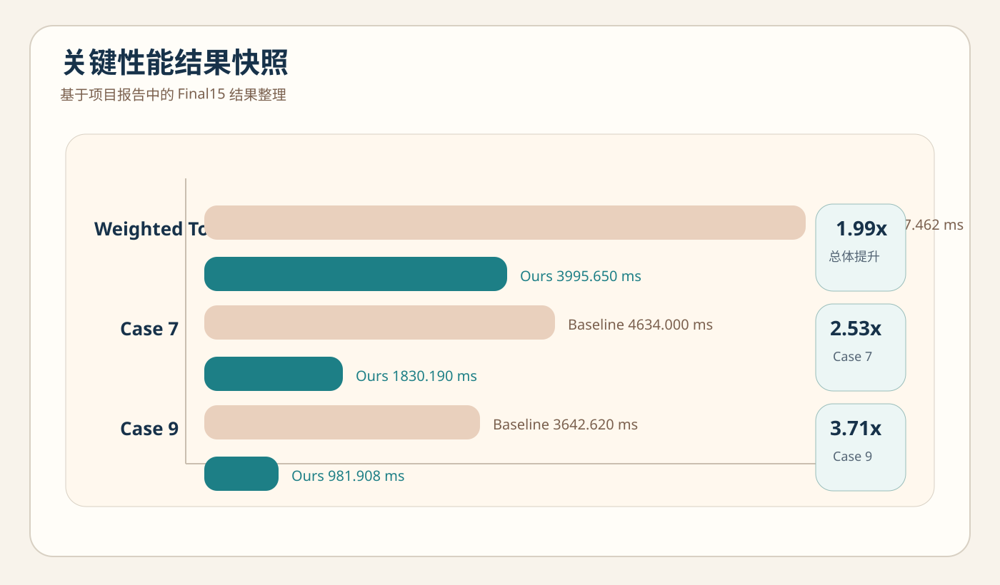

Weighted Total
7937.462 → 3995.650 ms
Final15 无预热单轮口径下，加权总耗时下降到原来的 50.3%。
Weighted Total
Final15 无预热单轮口径下，加权总耗时下降到原来的 50.3%。
Overall Speedup
全部 15 个用例满足 err_user ≤ ε 的前提下获得的整体收益。
Case 7
Case 7 从 4634.000 ms 降至 1830.190 ms，分解阶段收益最明显。
Best Per-case
Case 9 使用 BLOCK 路线时，表现出最强的单用例加速。
评分看板
Scoreboard
Weighted Insight

项目问题
在流程模拟里，牛顿迭代每一步都要解一次稀疏线性系统。真正拖慢端到端的不只是某个核函数常数，而是 fill-in、关键路径、长尾块和病态矩阵 共同叠加出来的系统问题。
稀疏直接法的并行上限受结构依赖限制。就绪任务不足、超大关键块主导或带宽饱和时，线程越多反而越慢， 因此必须让“结构”和“调度”先被看见。
这不是纯性能题。Rerank 把近奇异、条件数变坏、NaN/Inf、pivot growth 等风险当成一等公民处理， 通过信号触发更保守的路径，先保住精度门槛，再追求收益。
技术路线
读取 COO / CSR 稀疏矩阵与右端项 b。
提取规模、NNZ、块结构、长尾风险、预估 fill-in 等特征。
根据画像决定走 KLU 稳健路径，还是 BLOCK 结构分解路径。
Route A
适合小规模或结构不利于分块的输入。收益主要来自全局重排对 fill-in 的抑制， 优点是稳健、轻量、构建开销低。
Route B
对大规模且具有可利用块结构的矩阵，先做 DM/BTF → UBTF，再将对角块映射到 Block-DAG 上执行并行 factor / solve。
算法作用
Effect Map
Stage Impact
这里会跟随算法演示步骤，说明当前阶段究竟改变了什么。
算法演示
Matrix Stage
AUTO Decision
Block-DAG
Workers
文稿结构
项目亮点
代码落点
性能结果
15 个用例里，只有结构收益足够明显的 case 4 / 7 / 9 / 13 默认走 BLOCK； 其他用例保持 KLU 路线，这正是 AUTO 策略的价值。
文档明确指出收益主要集中在 decomp / factor 阶段，
说明结构分解真正降低了 fill-in 和关键路径长度。
在线程与亲和性层面，项目还做了 P/E 核感知与线程甜点区选择。
在一组消融实验中，pcores 相比 off 达到 1.218x。
Trend View
Gain View
证据链
交付形态
项目材料